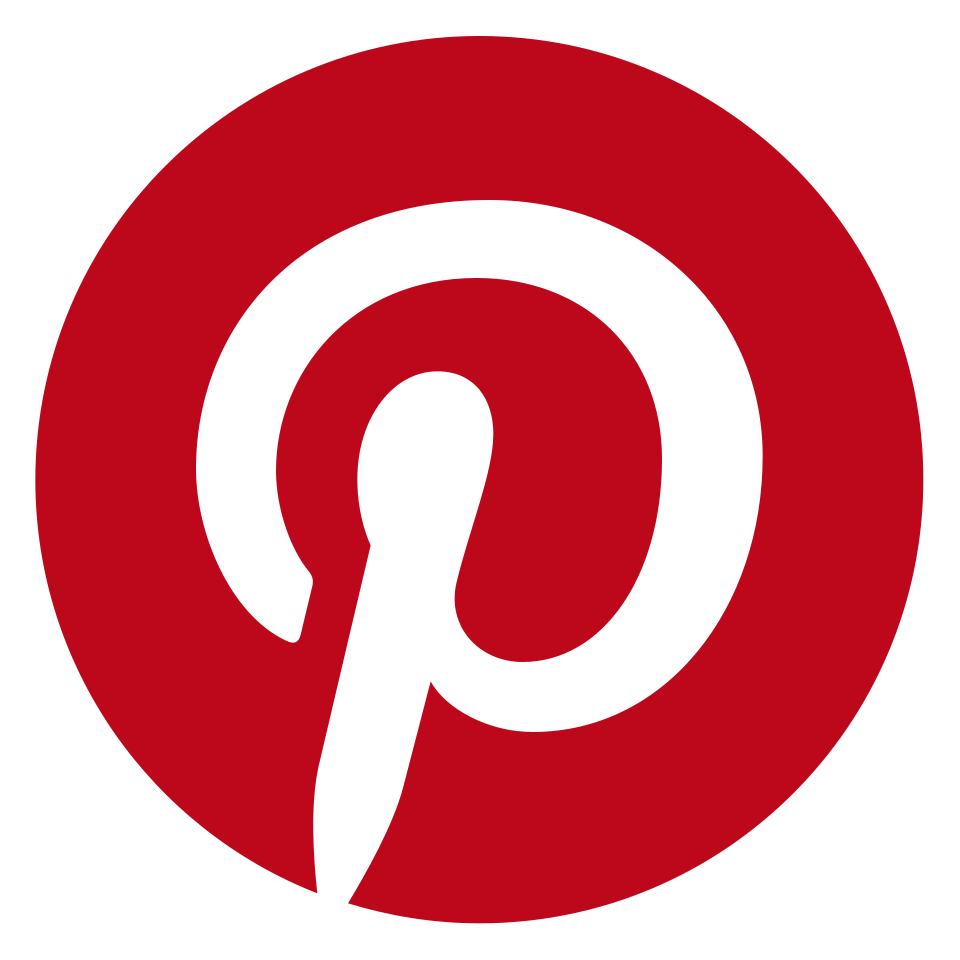

Index
These six documents are the condensed thinking behind idea generation, market selection, customer types, discovery, outreach, and how to introduce yourself. They are written for founders of The Bridge, and designed to give everyone in the cohort a baseline understanding of the key topics covered in the program.
Each document is a standalone reference. Read them in order or jump to what you need. Use them before talks, during customer discovery, and when you need to pressure-test your thinking.
How to find your idea
When you're looking for your startup idea, start from what you uniquely know, have seen, or can build. You're not here to build any company. You want to build the company you are most likely to win with, and you're most likely to enjoy building.
Your idea is a starting point, not a destination. You will test it, break it, reshape it, and eventually arrive at something you could never have planned from day one. Ideation is not finished until you reach PMF. Everything before that is iteration.
> Understand your edge
Most founders approach startups with a goal-first mindset: decide the best idea, then figure out how to build it. Under real uncertainty, the winning pattern is usually the opposite: start from the means you actually have, and discover what outcomes become possible.
Your edge is your unfair advantage. It's built on who you are (skills, taste, obsessions), what you know (domains, insights, experiences), and who you know (network, access). Describe the key few things you can do that most founders cannot. Be specific.
- "I designed the guardrail architecture that let a healthcare company deploy LLMs into clinical note summarization"
- "I built the perception-to-control stack that let warehouse robots grasp thousands of SKU variants"
- "I can get 20 procurement-grade conversations in fintech risk within a week"
> Prompts to help you find ideas
Find a belief about the future, and build towards it
Based on what you uniquely know and can build, what do you believe could be fundamentally different in 5-10 years? Name both the belief and the mechanism that will lead to this change. The mechanism is the only way to add credibility.
Founded 2012. $4Bn ARR, 265M users, $42Bn+ valuation.
Melanie Perkins was 19, teaching classmates Photoshop. She watched them spend an entire semester just learning where the buttons were. Her core belief: visual communication would overtake text as the primary language of the internet. The enabling forces: HTML5 making rich in-browser editing viable, social media exploding, mobile making images dominant. The first 100+ investors passed.
"This is hard, it shouldn't be this hard"
Notice a process you know well that is absurdly slow, expensive, or complex. Figure out why. This works best if the pain happens inside a domain where you have an edge, maps to a real budget or risk, and hides structural change that makes rebuilding newly possible.
Founded 2011. $1Bn+ ARR, 13M users, IPO at ~$20Bn.
In 2012, design was single-player and offline. Designers used Sketch or Adobe, exported PNGs, emailed them around, collected comments in separate tools. Dylan Field realized browser technology had matured to the point where you could build serious graphics applications entirely in the browser.
Founded 2023 out of EF. Raised over 30M euros including a 22M Series A.
Amine Raji spent six years at Nestle watching every step of food production get hyper-optimized, except one: checking for bacterial contamination still relied on growing cultures in Petri dishes. Five-day wait. He met Maxime Mistretta from the Pasteur Institute. They built a system that uses spectral analysis and deep learning to identify contamination in under ten minutes.
Ride the wave, but look for what's missing
Major tech shifts create new categories. Start with a platform shift, describe who gains new power and what new behavior becomes normal. List the second-order problems. Pick one missing layer that, if solved, becomes a control point.
The companies that win don't just use a new technology. They identify a structural gap that the technology created, and they become the answer to that gap.
Founded 2022. $2Bn+ revenue, 1M+ DAUs, $30Bn+ valuation.
By 2022, LLMs could generate and reason about code. Copilot proved the behavior was real. But it was a plugin bolted on top of existing editors. It couldn't understand an entire codebase or coordinate changes across files. Four MIT students forked VS Code and rebuilt it as an AI-native editor.
Founded 2010. $3.5Bn+ revenue, $42Bn market cap.
In 2010, cloud computing was moving from experiment to production. All existing monitoring tools were built for permanent, physical servers. In the cloud, servers appear and disappear constantly. Olivier Pomel and Alexis Le-Quoc built the monitoring system that only made sense in a cloud world.
Unbundle and rebundle
Unbundling: take a specific piece of a large product and do it 10x better. Rebundling is more powerful: look at a fragmented system and say this should not be ten steps, ten tools, and ten people. The winner redefines where the workflow lives.
Founded 2012. $1Bn+ revenue, $10Bn+ valuation.
Parker Conrad's insight was architectural: the real product wasn't any single module but the unified employee data layer underneath all of them. If you built a single system of record for every employee, every module on top could share data and eliminate fragmentation.
Think about which tools could use a network
Look for tools people already use alone, and ask whether the output would become dramatically more valuable if shared. Can you build a version where sharing happens by default, so every new user makes the product better for everyone else?

PinterestFounded 2010. 100M+ monthly active users, $2.7Bn+ valuation.
Ben Silbermann built a personal bookmarking tool where boards were public by default. When you pinned something, it appeared in feeds. When someone repinned, it spread further. A compounding loop from day one.
> What comes after finding the idea?
Your idea is a starting point. What is the smallest thing you can do to validate potential? What is the riskiest assumption? Don't test the easy things. Test the thing that scares you. The winning idea often comes not from the first hunch, but from insights uncovered while testing a hunch that turns out to be wrong.
Started as a chatbot for teenagers. Two years in, Google released BERT but it was inaccessible to most developers. The team produced a clean, usable PyTorch implementation within a week and open-sourced it. The reaction clarified the real direction: they became the hub where developers share models, datasets, and applications.
How to pick the right market
"The market matters more than anything else. You cannot out-execute a market that doesn't exist. Markets are a force in startups in the same way gravity is a force in physics. Get the market right or don't build."
Teams that understand and win a large, urgent market can achieve PMF almost by accident. Teams in unready or tiny markets end up fighting for every customer. A Tier 1 VC will never invest if they don't think you're building in a market that can create at least a decacorn company.
Market pull: is this mission-critical?
Market pull is observable spending behavior already being paid to make a critical problem go away. Can you name the current budget line item you are replacing, and who signs for it? If you cannot point to credible spend, you are likely pushing. Today, pull is easy to fake because everyone wants to run AI experiments. Distinguish pilot pull from production pull.
Market trajectory: where is it going?
A great market doesn't have to be huge today. It has to become huge and inevitable tomorrow. Treat TAM as a trajectory and a category destiny. Write down the 2-3 forces that make the market expand regardless of you: cost curves collapsing, behavior shifts, regulation opening.
Market structure and profit potential
Some enormous markets are structurally awful. The question: if a company wins, does the market structurally want the winner to become the default layer everyone builds around? Ask: if we win, what do we become the default for? Check whether the market structurally wants coordination: network effects, standard-setting, workflow centralization.
Distribution asymmetry
Some markets contain an unfair distribution dynamic baked in. The route to growth compounds, cheapens, or self-reinforces instead of remaining brute-force forever. Stripe distributed through developers. Figma spread through individual designers. Cursor proved value directly in use. Check whether usage naturally propagates inside a team, company, or network.
Speed of iteration
Short feedback loops and low friction mean faster truth. Can you see conversion? Retention? Expansion? If the market's feedback is noisy, your learning compounding breaks.
Market depth
Your wedge sits inside a larger system where expansion is natural. What do you get to own that makes the next product inevitable?
Non-consensus thesis
The strongest markets usually look wrong at first. The right question isn't "is this crowded?" It's: what do we believe that most smart people currently disbelieve, and what mechanism makes our belief become true?
Why now
Great startups are often bad ideas that became good ideas because a constraint broke. Ask: "Would this have plausibly failed 2 years ago?" If the answer is no, your why-now is weak and you're probably late.
Examples of great markets
Built the financial OS for internet-native businesses. Attached to the growth of internet GDP. Distributed through developers who could adopt without permission. Two young founders with no network competing against PayPal.
Sits on the critical path of AI: high-quality data and evaluation. Demand grows as a function of model capability, not just adoption. Once embedded in the training loop, switching costs become huge.
The editor is the fundamental control point. If the winning product becomes the default place where engineers read, write, refactor, and delegate work to agents, value concentrates around that layer.
Your customer is your boss
The type of customer you sell to shapes your entire company: what you build, how you sell, who you hire, how fast you learn, how much capital you need, and how happy you'll be. Most founders think about this too late.
Enterprise
Large organizations, 1,000+ employees, $1B+ revenue. ACVs of $100K-$1M+. Sales cycles run 3-18 months with multiple stakeholders. If any one says no, the deal stalls. GTM is relationship-driven and top-down. Land and expand works because it reduces buyer risk. Net dollar retention is the metric that matters most; best-in-class run NDR above 130%. Expect 25-40% of headcount in sales, CS, and solutions engineering.
SMB
Companies with fewer than 500 employees. Contracts are small ($1K-$25K/year) but there are millions of them. Sales cycles are days to weeks. The owner evaluates, decides, and pays, sometimes in the same call. GTM is high-velocity and product-led. The challenge is churn: 30-50% annually is common and often structural. Your acquisition engine has to run constantly just to replace lost customers before you start growing.
Prosumer
Individual professionals who adopt a product before the company formally procures it. The most powerful GTM motion of the last decade. Nobody asks permission to use Cursor. A developer installs it, feels the speed difference, never goes back. Weeks later, the manager standardizes. 70% of Figma's enterprise deals originated from individual users on free plans.
PLG has a hard requirement: the product must be immediately useful to a single user without any network. Cursor had less than 30 people when it hit $100M revenue. The leverage comes from the product, not the salesforce.
Consumer
Highest-risk, highest-reward. You compete for the scarcest resource in the world: human attention. Switching cost is zero and competition is infinite. D1 and D7 retention are the only metrics that matter early. DAU/MAU at scale. Consumer is where taste matters most, and where the failure rate is extremely high.
Which is right for you?
If you're a young founder with no enterprise network, prosumer/PLG or SMB will give you faster feedback, revenue, and learning. You can move upmarket later. If you're going consumer, be honest: outcomes are binary, and you're competing against everything else a person could be doing.
How to do effective customer discovery
Customer discovery means talking to the people you think you're building for. It sounds simple but it isn't. Humans are polite and confusing, founders are biased, and there is a lot of noise. You need a system.
Validate 5 things, in order
1. ICP
"Small businesses" or "developers" is not an ICP. You need at least three specific, measurable attributes. Gusto started with six: companies with five or fewer employees, in California, offering no benefits, only salaried employees, no contractors, willing to wait eight days after running payroll. Talk to 20-40+ people. Look for who leans in.
2. Problem
Understand exactly what they're struggling with, in their words, in their workflow. How much is it costing them? Go deep on impact and daily reality.
3. Promise
"You currently spend 5 days waiting for bacterial test results. With us, you get results in 10 minutes." Good promises are quantified. Test it in conversations before building. If nobody says "when can I have this?" you have a promise problem, not a product problem.
4. Price
Testing willingness to pay separates real demand from polite curiosity. Use commitment tests. Throw out a deliberately high number. They'll tell you their ceiling.
5. Product
Only once you've validated 1-4. Don't invest substantial time or money before you're confident on the first four.
Extract behavior, not opinions
If you're getting compliments, you're doing it wrong. What counts as data is behavior: concrete things people have actually done. Talk about their life, not your idea. Ask about the past, not the future.
Five questions you can always ask
- "What is the hardest part about doing X?" Gets to the core pain.
- "Tell me about the last time you encountered that problem." Forces a specific story.
- "Why was that hard?" Gives you your marketing copy. Pay attention to exact words.
- "What have you done to try to solve it?" Reveals actual competitors and qualifies seriousness.
- "What don't you love about those solutions?" Grounded in real experience.
How to know if customers are serious
Commitment is measured by what someone gives up, not what they say. Money is much better than time. Ask the question you're terrified to ask. Bad signals: "Send me the link when it's ready." Good signals: paid pilot, introductions, shared proprietary data, unprompted pricing questions, describing their implementation plan before you finish the demo.
How to do effective outreach
Outreach is a pipeline you build to repeatedly reach the right people, run good conversations, and convert the best ones as customers.
Mental models
High-quality early outreach is manual, long, and painful. Under no circumstances should you outsource or automate this in early stages. Think of outreach as a measurement system for "do people care enough about my problem?" Build the funnel backwards: start from "I need 3 pilots in month 1" and work backward through conversion rates.
Step 1: Start warm
First conversations come from people you already know. Former colleagues, classmates, alumni, fellow founders. When asking for intros: identify the specific person, write a self-contained forwardable email readable in under 45 seconds, respond immediately when connected, close the loop with the introducer. At the end of every conversation: "Is there anyone else you think I should talk to?"
Step 2: Cold outreach
Keep it very short. Five to seven sentences, readable on a phone without scrolling. Single specific ask. Write like a human. Establish credibility in one line. Make it about them. Follow up 2-3 times. LinkedIn: connection requests with no message have higher acceptance rates. Volume limits: 20-30/day max.
Step 3: Go where your customers live
In-person events convert dramatically higher than any digital channel. Trade shows, conferences, meetups. Tracy Young went to construction sites with doughnuts. Scale AI went to CVPR with laptops, pitching booth to booth without a booth. Online: Reddit, HN, Slack groups, Discord channels, industry forums. Participate genuinely first.
How much is enough?
Most founders dramatically underestimate volume. A typical funnel: 800 emails, 400 opened, 40 responses, 10 demos, 1 customer. Block 3-4 hours per day for outreach only. Start manual. Never automate before you've validated the message by hand.
Founder stories
Patrick Collison would say "give me your laptop" and set up integration on the spot. By the end of the conversation, the founder was a customer.
Ben Silbermann changed all the Apple Store display computers to show Pinterest, then stood in the back and watched people react.
Ran vulnerability checks on prospects before reaching out: "I found 5 unprotected endpoints on your public API. Here's the list."
How to introduce yourself
Your introduction is the most important two minutes of your early founder life, and most people waste it. You will give this intro hundreds of times: to potential cofounders, customers, investors, and people you want to hire.
The European intro vs the US intro
"Hello, my name is Charlie Songhurst. After reading PPE at Oxford, I started at McKinsey in London. Afterwards, I joined Microsoft where I headed Strategy. I moved to San Francisco where I angel invest."
Polite, accurate, and completely forgettable. Now the US version:
"Hi, I'm Charlie. After Oxford, I got my first job at McKinsey earning $200K a year. Two years later, Microsoft offered me GM London at $2M yearly. I started investing in crypto, turned a few hundred Ks into my first billion. Today I'm one of the most prolific angel investors in SF. I sit on the Board of Meta. I've seen it all."
Numbers, specifics, outcomes. Almost no adjectives. No "I was fortunate to." Just facts and data.
Tips
Lead with the strongest thing, not the first thing. If the most impressive fact about you is that you built a product used by 2 million people, say that first. You earn each additional second of attention. If you bury your best material at the end, they've already tuned out.
Use accomplishments rather than titles. "I was a PM at Stripe" tells someone where you sat. "I built the billing infrastructure that processes $50B+ in recurring revenue for Stripe's SaaS customers" tells them what you can do. Titles are forgettable. Specific things you built, shipped, or achieved are not.